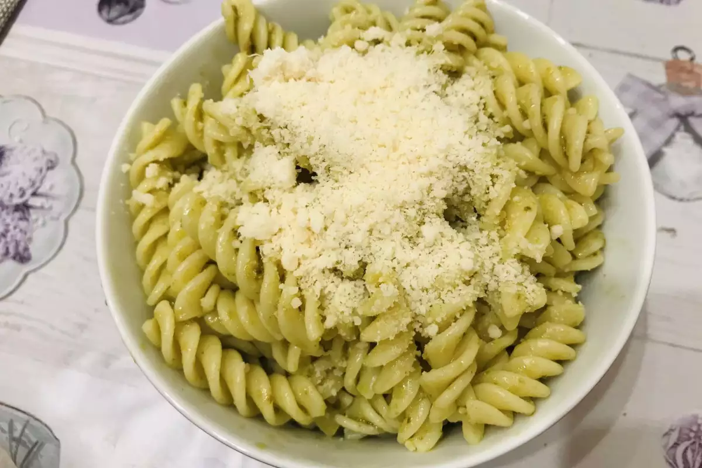

Makarone sa sirom, pavlakom i pestom

Kakve su ovo makarone?
Makarone sa sirom, pavlakom i pestom su ukusno i brzo jelo. Veoma lako se spremaju, vecina sastojaka je dostupna vec kod kuce i veoma su ukusne
Sastojci
- Makarone (po želji)
- Sir (po izboru, može gauda, parmezan, ili bilo koji koji volite)
- Pavlaka za kuvanje
- Pesto sos
- (Opciono) Parmezan
Priprema
- Skuvajte makarone prema uputstvu na pakovanju.
- Dok se makarone kuvaju, pripremite sos. Pomešajte pavlaku, pesto sos i sir.
- Kada su makarone kuvane, procedite ih i vratite u šerpu. Ostavite malo pasta vode na dnu serpe, za bolji ukus.
- Dodajte pripremljeni sos i dobro promešajte da se svi sastojci sjedine.
- Po želji, pospite sa malo parmezana.
- Uživajte u jelu!
Home